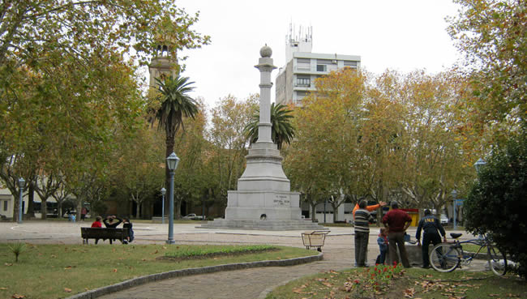
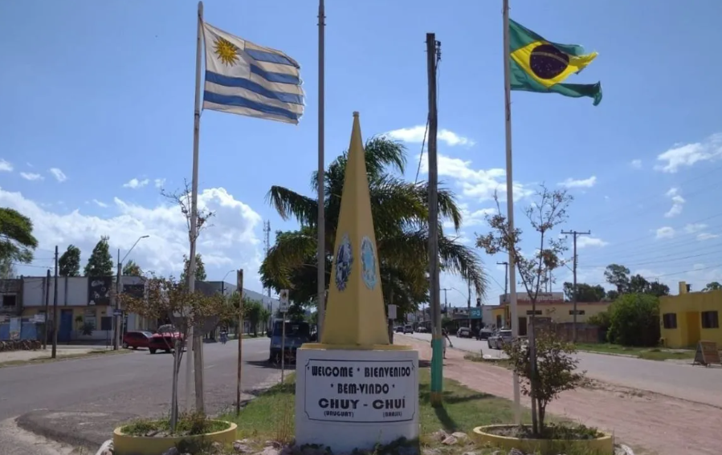
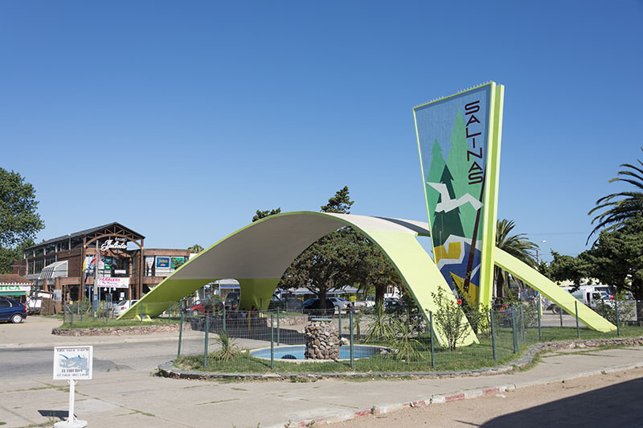

Operamos en tres puntos del país, con presencia presencial y soporte remoto para llegar a donde nos necesitás.

Ciudad del centro del país y corazón de nuestras operaciones. Desde acá coordinamos todos los proyectos, brindamos atención presencial y acompañamos a comercios, emprendedores y vecinos de la región que quieren dar el salto digital.

Ciudad fronteriza con Brasil, en el extremo noreste del país. Un punto estratégico donde conviven dos culturas y dos mercados. Ayudamos a comerciantes y emprendedores locales a adaptarse al entorno digital en una zona con dinámicas únicas.

Localidad costera del departamento de Canelones, a pocos kilómetros de Montevideo. Brindamos servicio a una comunidad en crecimiento donde conviven residentes permanentes y familias que buscan conectarse mejor con el mundo digital.
La primera consulta es completamente gratis, presencial o por videollamada.
Contactanos →